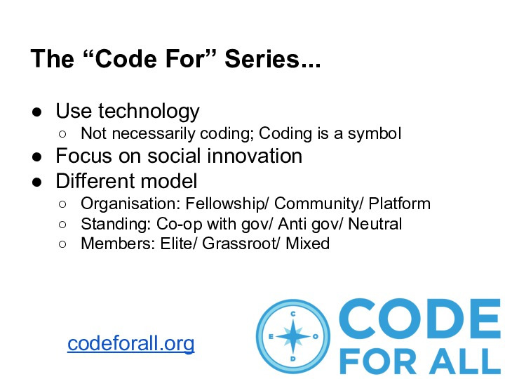
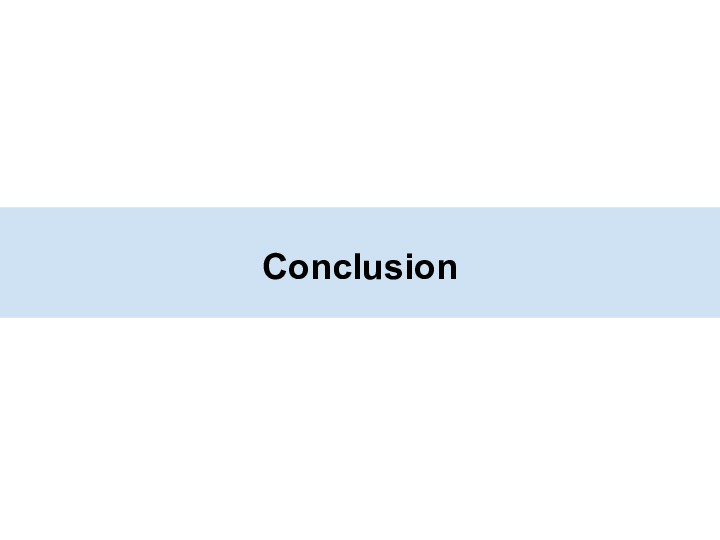

Code for America 是“code for” 系列的始祖。 最早的一个App，成功解决了消火栓被埋在雪里的问题。 通过crowd-sourcing和gamification的方式，成功激发市民们主动维护。 后来这个App被用在了超过9个城市中，应用场景不同但应用框架类似。 比如，夏威夷用来众包保护报警器。 比如，西雅图用来众包清扫下水道口的树叶。
311，市政热线。 接到大量无意义的电话，比如：我家出了老鼠怎么办。 图中是CfA的一个fellow，他在呼叫中心工作。 他除了一个主意： 你把所有的门窗打开，用最大的音响放摇滚乐，把它们都吓出去。 除了这个玩笑外，他认真思考，决定做一个网络平台。 这样，人们可以相互帮助，并且重用已知的知识，大大节省政府的开销。
强烈推荐看下Jennifer的TED talk。
引用两段。
这个国家，有成百上千的人们站起来了， 每天为它们的社区编写公民创新的应用。
他们没有放弃政府。 他们对政府的低效与无能非常失望， 但他们没有抱怨， 他们尝试修复。
“Code for”系列席卷全球， 甚至，我们都能找到 “code for africa”。
但Code for China在哪里？
台湾政治氛围自由，公民参与度传统上就很高。 近年由于技术社区的兴起， 通过开放源码与开放数据改良政府的运动被推上高潮。 g0v就是其中的弄潮儿。 此外，还有大大小小的各种编码聚会， 不时输出一些公民创新项目。
传统上，政府保存的财务记录是纸质的。 而电子化后，多半为图像。 这对人们监督不良消费，造成了阻碍。 有人做了一个众包平台，发动所有“乡民”共同数字化这套资料。 60余万的图像资料，一天之内就被数字化完成。

“Code for”系列席卷全球，形成了一个 “Code for all”的网络。 要点：1、使用科技；2、专注社会创新。 此外，组织形式，政治立场，成员组成，都各不相同。 每一个组织，都最大化地迎合了本地的复杂环境。
CfA的联盟网络，已在全球开花。
我们附近的“Code for”系列组织。
Code4HK的一个简单timeline
P哥主导的一个项目，分析香港立法会数据。
获得立法会投票记录的结构化数据， 优势是可以表格化，并且在其上进行机器学习的运算。
通过主成分分析（PCA），获得一份政治光谱。 来自数据的“左右”，是客观的。 言辞可假，但投票不可欺。
公众反馈，两点有意思。 一、通过领域知识的解读， 帮助排查算法的错误，或者原始数据的错误。 二、通过回答公众的问题，加强其对算法的理解。
虽然公众有很多不科学的“算法”， 但这些思路也是深化现有算法所需考虑的。
从曾经的评论来看，有人发现过言行不一的议员。 （激进的言论；保守的投票策略）。
force-directed layout是一种研究社交网络常用的方法。 通过投票的模式，可以将议员们形成社交网络。 通过可视化，能清楚地反应出人们之间的关系。
反思。 1、需要设计师，将一份数据分析的结果美化，更易使用。 2、需要有记者，将生涩的研究成果，讲成老少皆宜的故事。 3、需要有公众参与，搜集反馈，形成闭环。
当然，时刻不忘培养下一代。 civic hacking的思想无缝插入课程教学。
P哥主要参与的一个项目。 数据搜集、清洗、结构化和后端API。
将香港2011的人口普查数据（一堆按地区划分的xls文件）， 进行深度地利用。 交互式地探索香港。

点击一个区域，可以查看它的各项属性。 如年龄分布、性别分布、种族分布、收入分布，等等。
选择某个metric，将其按区域画在地图上。 很直观地反应出区域性的差异， 如收入、房租等。
完全开放源码、开放数据。 任何人可以简单重现这些结果，并做进一步利用。 如不想host后端，我们的API服务器也是开放的。 通过API browser，可以方便浏览数据，获得基本认识。 通过假单的库引入和样例代码的插入， 只需简单的前端，即可对感兴趣的数据进行可视化。
civic hacking的项目，永远不像学术研究或课程作业那么干净。 数据补全，是惯常出现的。 有时候人手操作，有时候诉诸专家。 Gazetteer的开发团队，从中大图书馆借出十年前的人口普查光碟， 提取海岸线数据。
一份近期对Gazetteer项目的真实利用案例。 香港关注区选，而争取年轻人的支持至关重要。 如何发现年轻人在哪里呢？ Gazetteer的可视化，提供了一个便利。
开源模式：生产者；推广者；消费者
新界东北的开发引起广泛争议。 这份交互地图，以一种讲故事的方式， 带领普通民众对新界开发问题形成系统的认识。
每年财政预算出来，都会给立法会批准。 期间的舆论，以前主要是依靠专家导向。 有了budget calculator，一个人就能量化， 新的财政预算，对自己生活造成的直接影响。
MaD, Make a Difference， 是亚洲区域非常有影响力的论坛， 无数年轻人在参加之后， 生活态度大有改观，投入到社会创新中去。 code4hk 为MaD开发网站， 是其支持各种NGO的一个样例。
技术，不是用来给自己刷存在感的。 通过技术，让其他社会创新团体走得更快、更好， 也是我们的目的。

从最初的几个人，到如今的1400人。 所有社区，都有一个从小到大的成长过程。
Code ==> Technology。 code只是一个符号。 我们真正使用的是科技。 甚至搜索引擎优化、社交网络推广也算， 谓之泛科技。
HK ==> Social。 For social, for public, for all。 代码没有疆界。 绝不会仅为一个地区，仅为一种政见的人群编码。 for一个地区，仅仅是由于地域上的临近性， 能产生更高频的互动，以催发更好的创新。
Where is Code for China?
这绝不是注册一个域名这么简单， 也不是办一次活动这么简单。
Code for系列的精华，是一个个可续存的社区。 不同技能的人，共同推动着跨学科的项目， 通过技术，改良他们的周遭，改良他们的政府。 甚至包括，改变游戏规则。